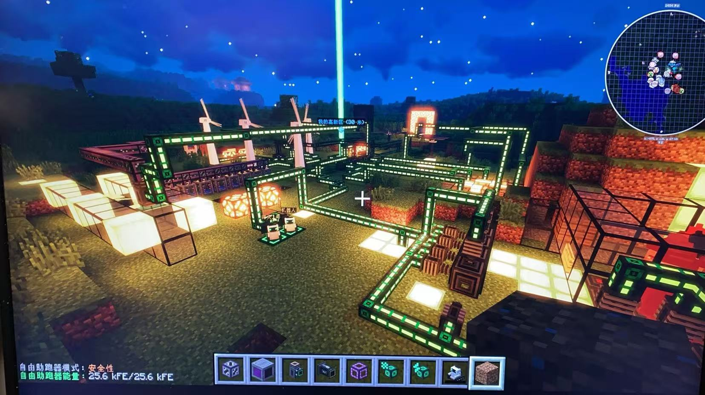

做了什么已将原来的博客大部分内容搬回来。增加了音乐功能。完善了侧栏内容。增加了文章的归档功能和分类功能。目前规划有四种类别：学术、读书、知识库、项目。项目目前打算增加三篇，主要是 github 自己的小项目（做的项目实在太少了😢）。建立了友链。TODO修复无法搜索的 bug。将知识库整理好。将一些关于深度学习的小项目放出来。将更多的博客内的组件功能完善，比如看板娘。修复评论区主人头像无法显示的问题。增加图库图片数量以丰富页面。